2026 · 2·한양대학교 GLOBAL FUTURE THEATRE 창작 뮤지컬 쇼케이스
난릉
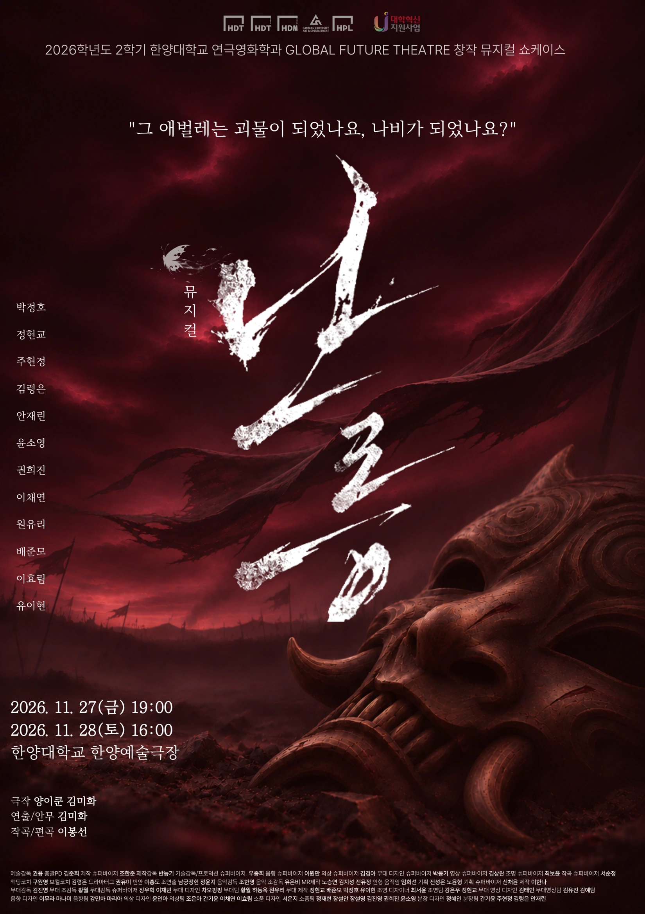
목차
트리거워닝

시놉시스
“그 애벌레는 괴물이 되었나요,
나비가 되었나요?”
고운 외모를 가지고 태어난 고씨 집안의 넷째 아들 '고장공'.
여린 외모와 유약한 성정, 넷째라는 약한 지위 때문에 형제들에게 괴롭힘을 당한다.
모욕과 수난을 견디던 고장공은 형제들이 지른 불에 어머니를 여의고, 이를 계기로 각성하여 '가면'을 쓴채 전장을 호령하는 '난릉왕'이 된다.
고장공의 사촌동생이자 황제인 '고위'는 날이 갈수록 드높아지는 난릉왕의 명성을 시기하고, 이에 난릉왕은 목숨을 부지하기 위해 오명을 뒤집어 쓴다.
그리고 출전한 망산전투에서, 난릉왕은 적은 병력으로 대군을 격파하는 공을 세우고, 이를 시기한 황제 고위로부터 독주를 하사받게 된다.
죽음을 앞두고 고뇌하던 난릉왕은 고뇌 끝에 독잔을 받아들고, 고위는 쓸쓸히 권좌에 갇힌 채 홀로남아 스스로 왕조를 무덤에 묻어 피의 굴레를 끊는다.

작품 소개
난릉: 가면 속 두 남자
뮤지컬 〈난릉〉은 가면 속 두 남자의 이야기입니다. 가면을 쓰고 전쟁터에 나가 뛰어난 공을 세워 난릉왕이라불리는 고장공. 이미 용상에 앉아 있으면서도 난릉왕의 가면을 쓰고, 난릉왕이고 싶었던 황제 고위. 제목인 ‘난릉’에는 난릉왕으로 살아온 남자와 난릉왕이 되고 싶었던 남자가 공존합니다.
한 잔의 독주에 겹쳐진 시공간
프롤로그에서 난릉왕 고장공은 안개 속에 놓인 독주 앞에 서 있습니다. 샤먼의 북이 울리고 여러 목소리가 그를 잔 앞으로 밀어붙이면서, 잔을 드는 짧은 순간 안에 두 남자가 살아온 시간이 펼쳐집니다. 소년 고장공과 성인 고장공이 한 무대에서 서로를 보고 말을 건넬 수 있는 것도 이 때문입니다.
작품의 배경은 6세기 후반 북제입니다. 황실에서 왕위를 둘러싼 다툼이 한창인 가운데, 망산전투에서는 그 황실을 지키기 위해 병사들이 싸웁니다. 그 사이로 소년이 애벌레를 돌보던 뜰, 어머니가 고향을 떠올리며 노래하는 매화 숲, 고장공이 고위와 마주하는 석굴 사원이 극의 진행에 따라 차례로 장면을 구성합니다. 매화 숲은 어머니의 노래를 통해 불타는 방 안에 되살아나기도 하고, 석굴 사원에서는 보살의 얼굴 위에 어머니의 모습이 겹쳐지기도 합니다. 보살을 통해 어머니를 본 고장공은 용상에 앉으면 누구라도 같은 일을 되풀이하리라는 것을 깨닫게 되어 고위를 향한 칼을 거둡니다.
작품의 시노그래피에서 주목할 것은 관객이 시공간의 변화를 어떻게 경험하는지 입니다. 불타는 방에서 어머니의 노래가 어머니 고향의 매화나무 숲을 불러오듯, 샤먼의 북소리는 안개 속 술잔 앞에서 지나간 시간을 열어 줍니다.
가면 또한 누가 쓰는가에 따라 의미가 달라집니다. 고장공이 가면을 쓰고 전쟁터로 나갈 때, 관객은 그의 결의와 그에게 거는 병사들의 기대를, 고위가 가면을 쓸 때는 난릉왕처럼 되고 싶은 인간의 욕망을 보게 됩니다.
극의 후반에 가까워지면 전쟁터의 환영이 걷히고 고장공의 숨소리만 남습니다. 여러 해에 걸친 사건을 따라온 관객은 숨소리를 들으며 프롤로그의 짧은 순간으로 돌아옵니다.
처음에는 황제가 고장공에게 내린 잔이었지만, 마지막에는 그 잔을 내린 고위 자신이 마셔도 되겠냐고 묻습니다. 두 사람이 살아온 시간을 지켜본 뒤에 듣는 이 질문은 처음의 술잔을 다르게 보이게 합니다.
여기까지 보면 <난릉>은 무거운 주제를 어둡게 다룬 작품 같지만, 전쟁과 왕위 다툼의 사이사이에 춤과 노래를 통해 드러나는 소소한 궁정의 이야기가 있습니다.
궁정 속 감춰진 서사들
<토끼 동요>에서 망령들은 토끼의 숫자를 세듯 왕좌를 둘러싼 혈투에서 하나하나 죽임을 당한 혈육을 노래합니다.
경쾌한 리듬과 ‘라라라’ 하는 후렴 사이에 누가 쓰러졌고 누가 다음 차례인지를 세는 놀이처럼 보이던 장면은 어린 고위 앞에 칼이 던져지는 순간 달라집니다. 권력을 지키려면 혈육부터 없애야 한다는 법칙을 어릴 적 고위가 어떻게 배웠는지, 훗날 고위가 다른 혈육을 직접 죽이는 것도 이를 통해 배운 것임을 관객은 이해하게 됩니다.
2막을 여는 장면에도 장난 섞인 장면이 있습니다. 나라가 망하는 시간이 얼마 남지 않았다는 예언을 속삭이던 궁녀들은 난릉왕이 있으니 무엇이 두렵겠냐며, 그가 갑옷을 벗던 순간과 자신에게 눈길을 줄 가능성을 놓고 즐겁게 장난을 칩니다. 이들의 이야기를 듣고 난릉왕이 용맹한 장군이며, 나라가 위태로울 때 믿을 만한 사람이라는 것을 알 수 있습니다.
반면, 난희는 난릉왕을 영웅이라 불렀다는 이유로 자신을 죽인 고위 앞에 나타납니다. 궁녀들이 웃으며 즐겨 부르던 이름을 난희가 고위 앞에서 다시 말할 때, 관객은 그 이름이 얼마나 많은 믿음과 신뢰를 가지는지, 고위에게 얼마나 위협적이었는지를 알게 됩니다.
꼭두각시인형 장면에서도 익살스러움은 이어집니다. 꼭두각시 인형과 고장공의 목소리가 겹치면서, 인형을 자신의 손으로 움직일 줄 아는 사람이 정작 자신의 삶에서는 보이지 않는 끈에 매여 있다는 역설이 춤과 노래 속에서 드러납니다.
관객에게 묻는 영웅의 의미
전투를 앞두고 고장공은 자신이 누구를 위해 싸우는지 묻습니다. 난세에 짓밟힌 평범한 사람들을 살리겠다고 다짐한 순간, <파진곡>이 울려퍼지고, 관객은 사람들을 지키려는 난릉왕의 마음과 함께 전쟁터에서 그가 감당해야 하는 폭력을 한 장면에서 마주하게 됩니다.
한편, 궁정에서 난릉왕의 가면을 쓴 고위가 그토록 원한 것이 무엇인지도 짐작할 수 있습니다.
가면을 쓰면 고통을 피할 수 있으리라 믿었던 난릉왕 고장공과, 난릉왕의 가면을 쓰고 그의 자리에 서 보고 싶었던 고위.
우리가 영웅이라고 부르는 사람은 누구일까요?
드라마터그 | 권유미
PROFILE / 06
난릉왕 고장공 · 박정호

박정호
전장의 신이라 불리우는 난릉왕.
어린 시절, 약한 모습 때문에 형제들에게 괴롭힘을 당한다.
강해지길 원했지만, 난세의 영웅이라 칭송받는 지금도
원했던 평안을 찾지 못하고 불안해한다.
PROFILE / 07
고위 · 정현교
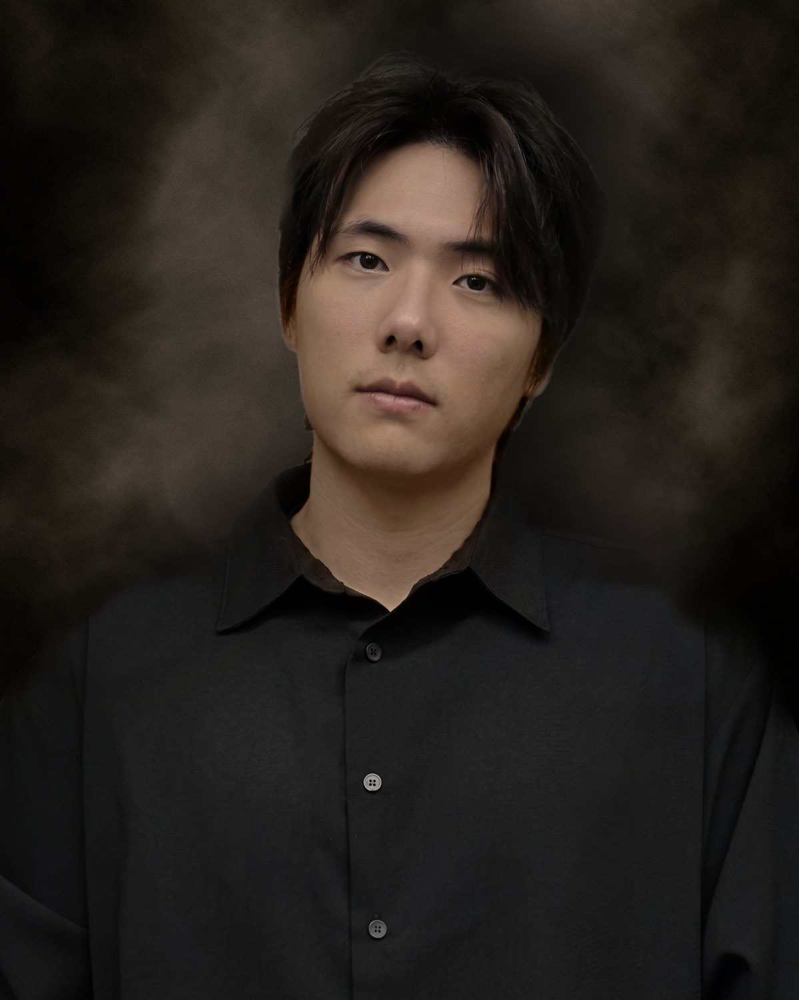
정현교
용상의 주인이자, 권력의 정점에 있는 황제.
난릉왕과는 사촌형제지간이다.
점점 드높아지는 난릉왕의 명성을 시기해 독주를 내린다.
PROFILE / 08
소년 고장공 · 주현정

주현정
훗날 난릉왕이 되는 고장공의 어린시절.
어머니를 닮아 고운 외모와 유약한 성정 탓에
형제들에게 매일 괴롭힘을 당하다 어머니를 여읜다.
강해지기 위해 샤먼이 건넨 가면을 받아든다.
PROFILE / 09
샤먼 · 김령은

김령은
운명을 인도하는 존재, 무당.
나라에서 가장 영험한 무당으로, 그녀의 예언 중에는
틀린 것이 하나도 없다고 한다.
PROFILE / 10
어머니 · 안재린
안재린
난릉왕 고장공의 어머니 서씨.
고운 외모와 달리 비천한 출신이라 집안에서의 입지가 약하다.
형제들의 방화로 인해 목숨을 잃는다.
PROFILE / 11
난희 · 윤소영

윤소영
황제 고위가 가장 아끼던 여인.
황제 앞에서 난릉왕을 칭송했다는 이유로 목숨을 잃는다.
PROFILE / 12
광대 1 · 권희진
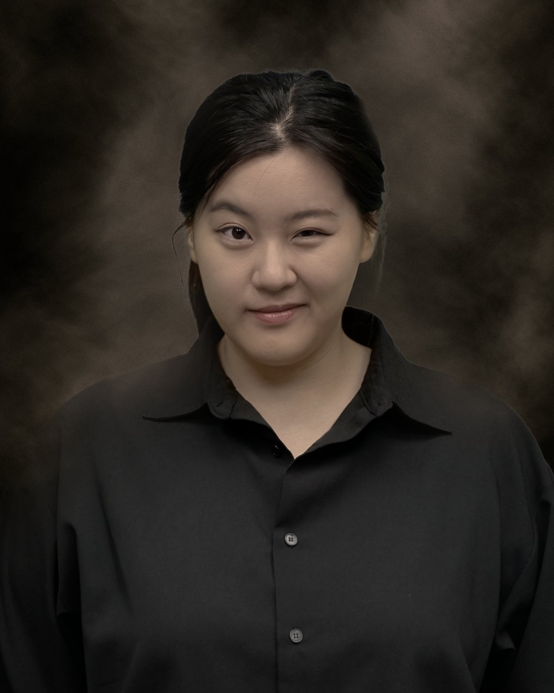
권희진
고씨 집안의 정해진 운명을 지켜보는 광대.
황제 고위와 난릉왕 고장공의 어린 시절부터 현재까지,
시간을 넘나들며 이들을 지켜본다.
PROFILE / 13
광대 2 · 이채연
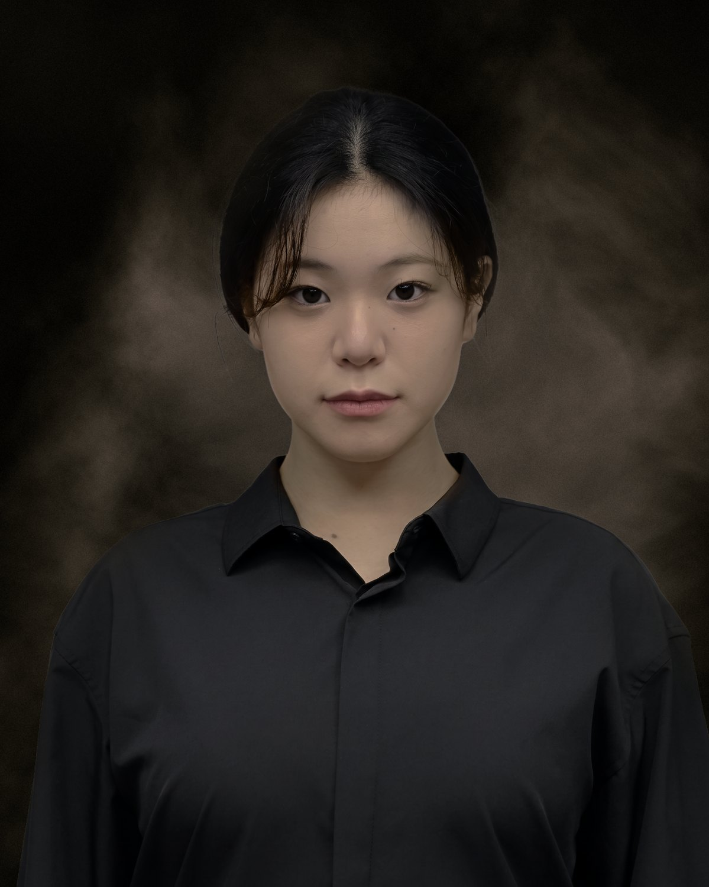
이채연
고씨 집안의 정해진 운명을 지켜보는 광대.
황제 고위와 난릉왕 고장공의 어린 시절부터 현재까지,
시간을 넘나들며 이들을 지켜본다.
PROFILE / 14
앙상블 1 · 원유리
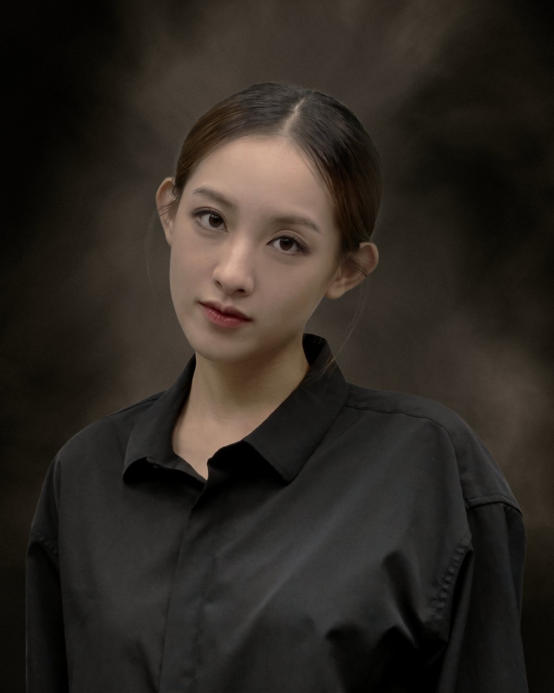
원유리
작품의 여러 장면에 목소리와 움직임을 더한다.
인물들을 둘러싼 시대와 군중을 표현하며,
이야기의 흐름을 함께 이끈다.
PROFILE / 15
앙상블 2 · 배준모

배준모
작품의 여러 장면에 목소리와 움직임을 더한다.
인물들을 둘러싼 시대와 군중을 표현하며,
이야기의 흐름을 함께 이끈다.
PROFILE / 16
앙상블 3 · 이효림
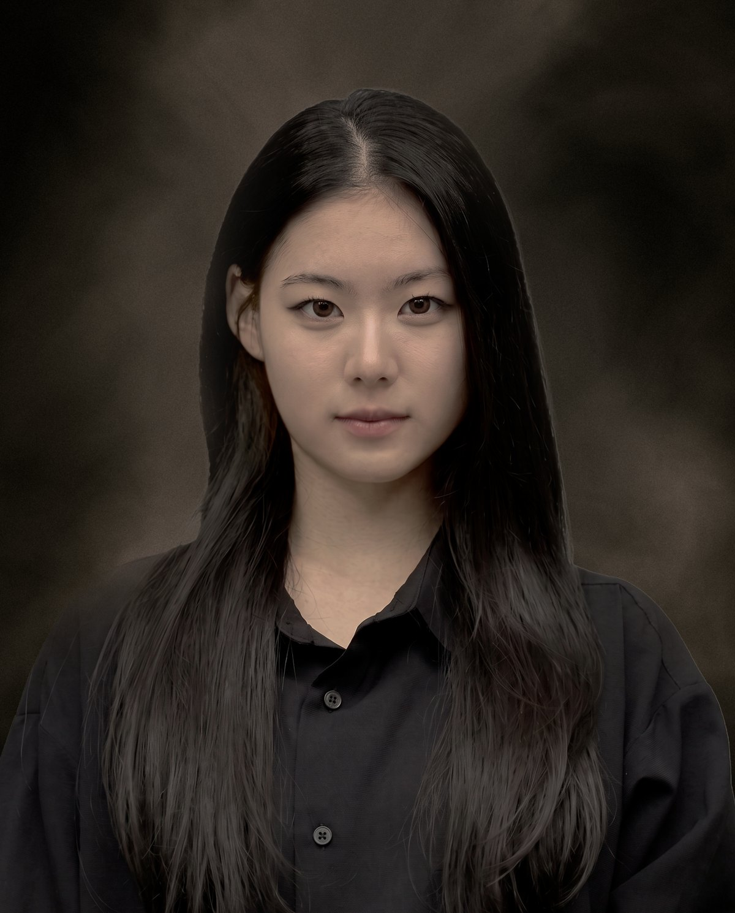
이효림
작품의 여러 장면에 목소리와 움직임을 더한다.
인물들을 둘러싼 시대와 군중을 표현하며,
이야기의 흐름을 함께 이끈다.
PROFILE / 17
앙상블 4 · 유이현
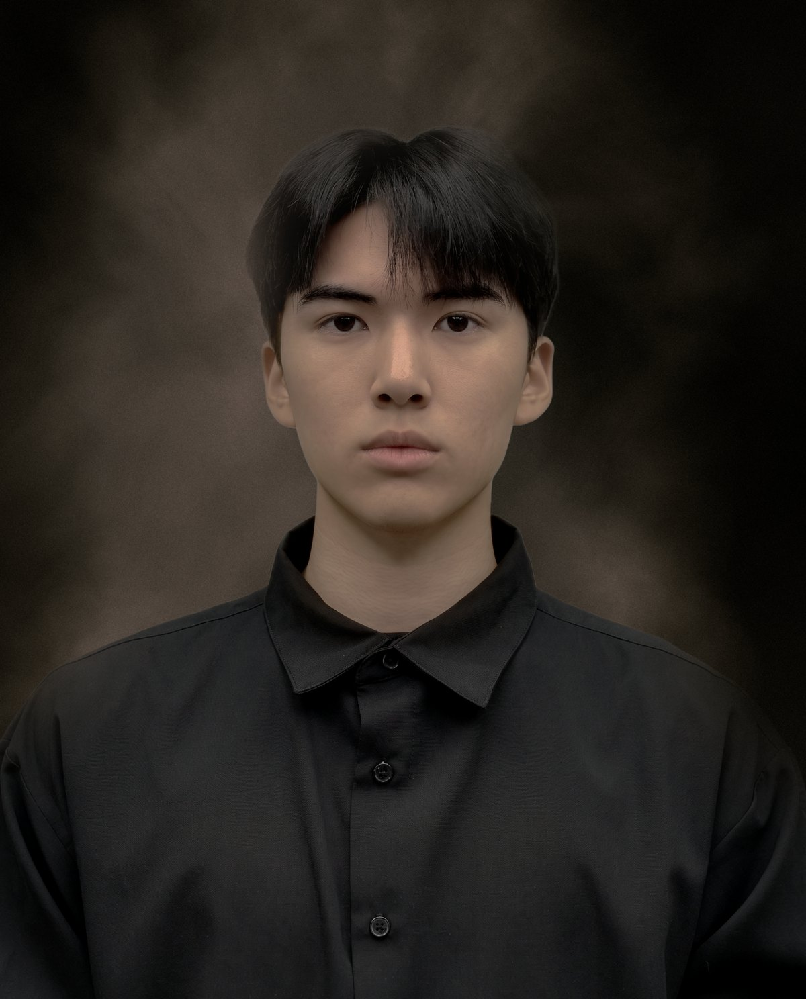
유이현
작품의 여러 장면에 목소리와 움직임을 더한다.
인물들을 둘러싼 시대와 군중을 표현하며,
이야기의 흐름을 함께 이끈다.
창작진 전체 크레딧
CREATIVE TEAM & SPECIAL THANKS
- 극작
- 양이쿤 김미화
- 연출/안무
- 김미화
- 작곡/편곡
- 이봉선
- 예술감독
- 권용
- 총괄PD
- 김준희
- 제작 슈퍼바이저
- 조한준
- 제작감독
- 반능기
- 기술감독/프로덕션 슈퍼바이저
- 우종희
- 음향 슈퍼바이저
- 이원만
- 의상 슈퍼바이저
- 김경아
- 무대 디자인 슈퍼바이저
- 박동기
- 영상 슈퍼바이저
- 김상완
- 조명 슈퍼바이저
- 최보윤
- 작곡 슈퍼바이저
- 서순정
- 액팅코치
- 구원영
- 보컬코치
- 김령은
- 드라마터그
- 권유미
- 번안
- 이홍도
- 조연출
- 남궁정현 정윤지
- 음악감독
- 조한영
- 음악 조감독
- 유은비
- MR제작
- 노승연 김지성 전유정
- 인형 움직임
- 임희선
- 기획
- 전성은 노윤형
- 기획 슈퍼바이저
- 신채윤
- 제작
- 이한나
- 무대감독
- 김진영
- 무대 조감독
- 황월
- 무대감독 슈퍼바이저
- 장우혁 이재빈
- 무대 디자인
- 차오핑핑
- 무대팀
- 황월 하동욱 원유리
- 무대 제작
- 정현교 배준모 박정호 유이현
- 조명 디자이너
- 최서윤
- 조명팀
- 강은우 정현교
- 무대 영상 디자인
- 김태인
- 무대 영상팀
- 김유진 김예담
- 음향 디자인
- 이무라 마나미
- 음향팀
- 강민하 마리아
- 의상 디자인
- 윤인아
- 의상팀
- 조은아 간기윤 이채연 이효림
- 소품 디자인
- 서은지
- 소품팀
- 정재현 장설안 장설영 김진영 권희진 윤소영
- 분장 디자인
- 정혜인
- 분장팀
- 간기윤 주현정 김령은 안재린
연습사진
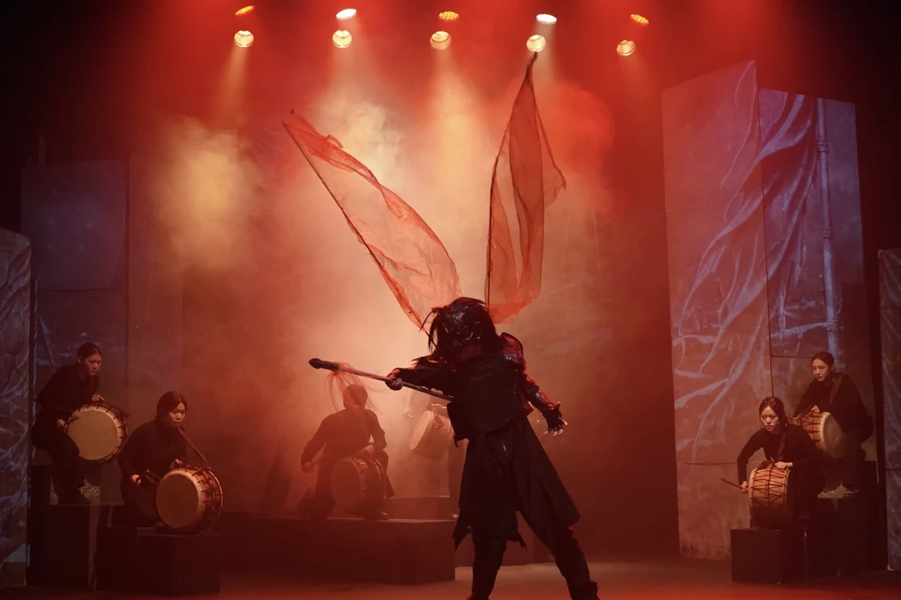
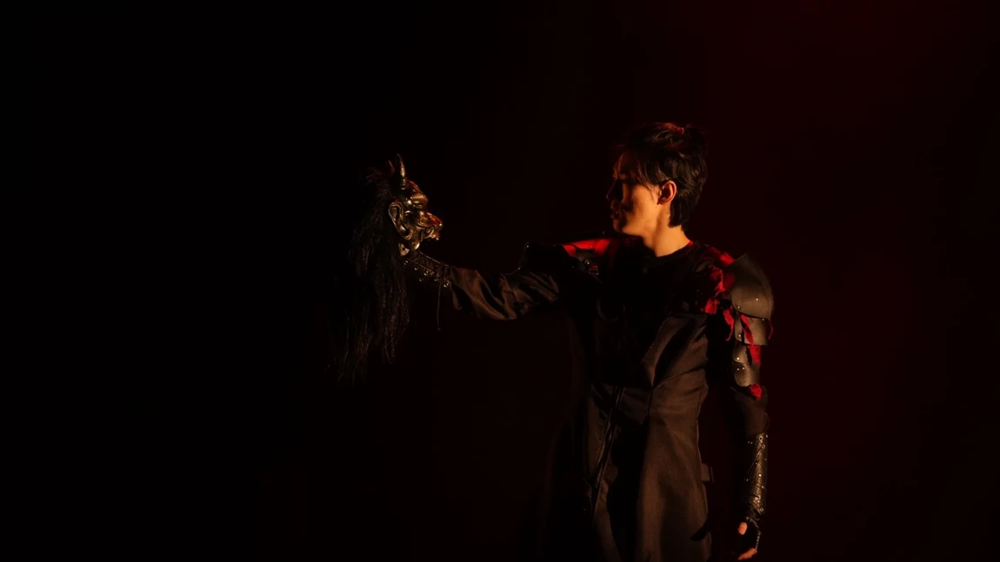


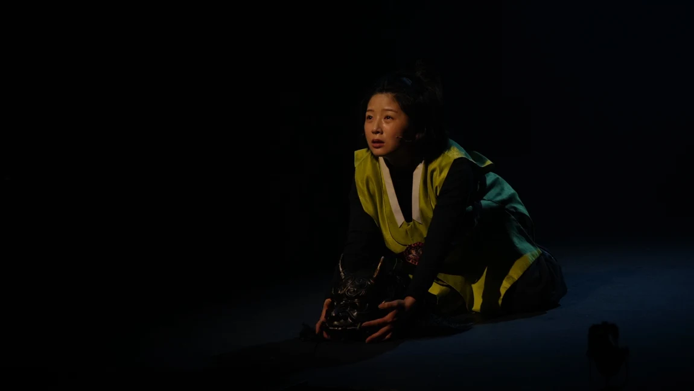


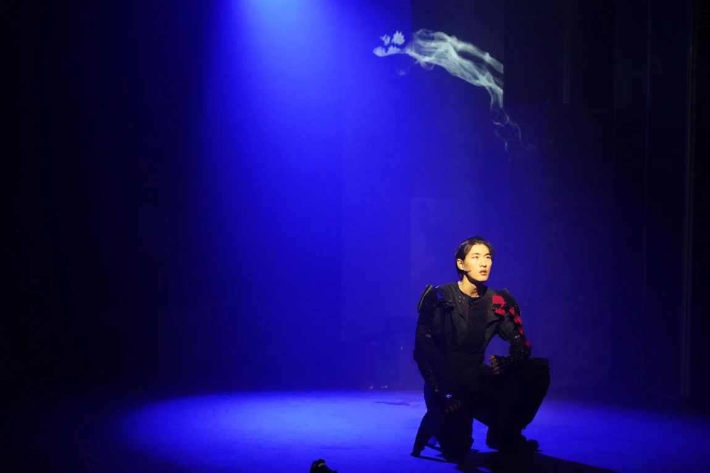
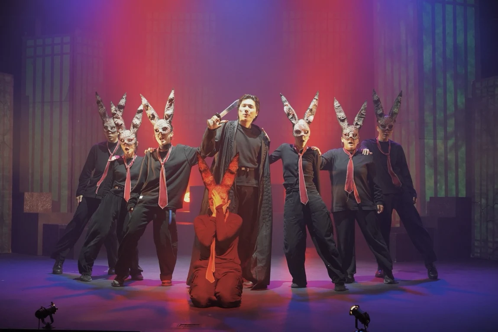
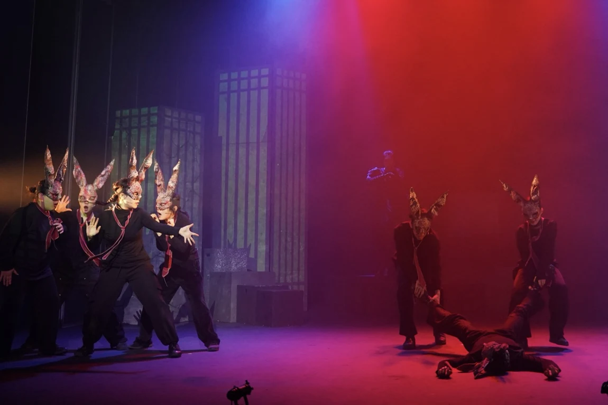
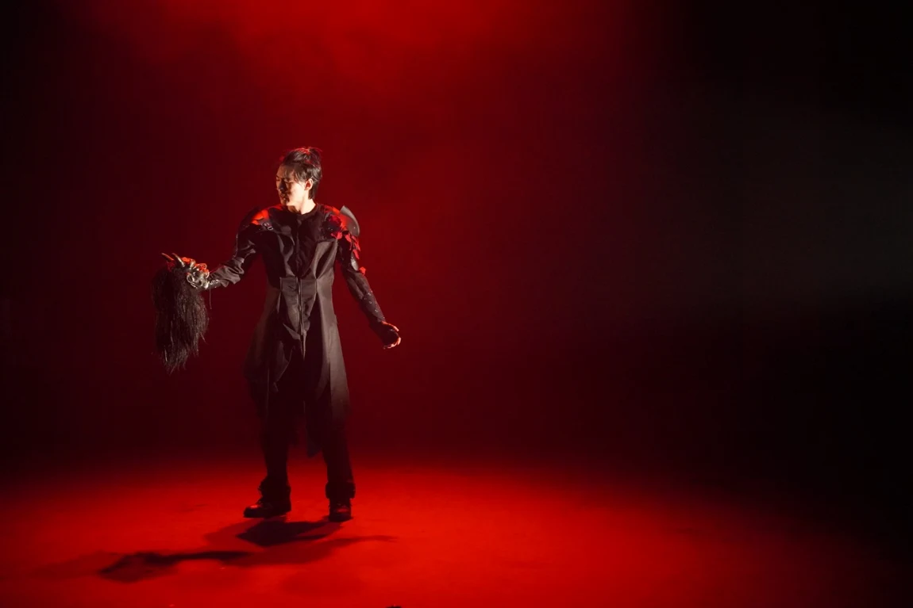


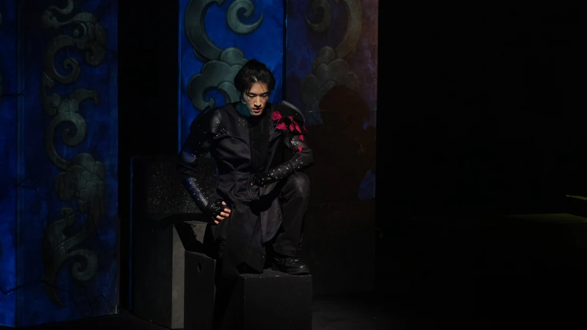

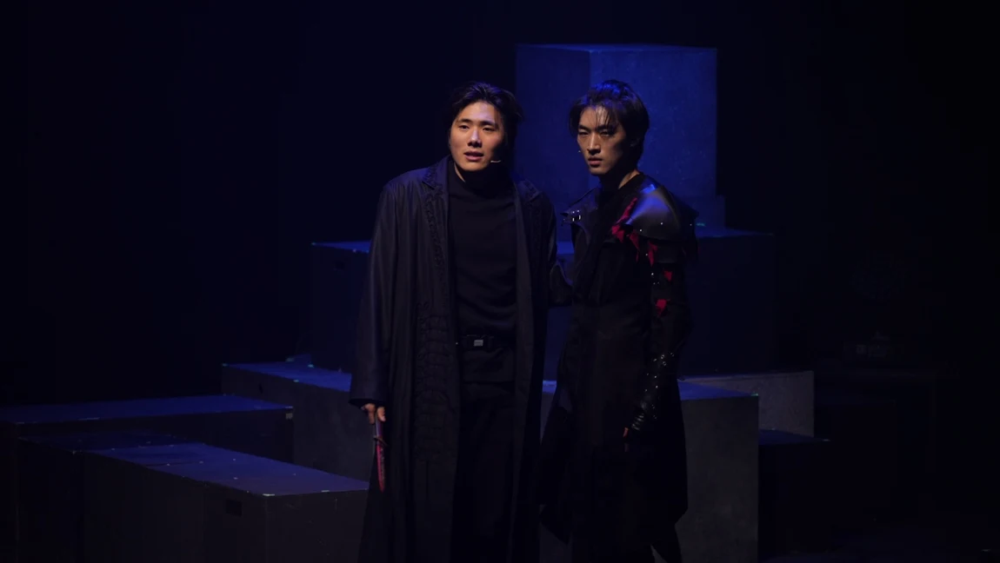